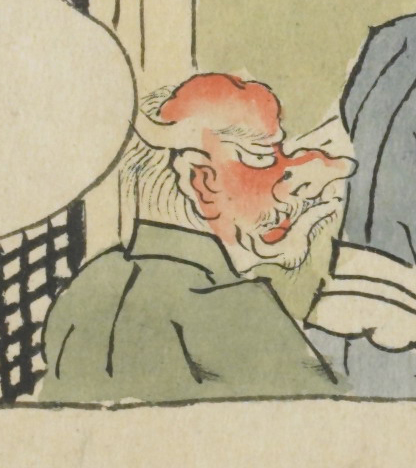

赤い顔をした鬼。鼻が高く、耳のあたりから角が生えている。口髭、顎髭を生やしている。緑色の羽織を着ている。
出典：親書誌：U426_nichibunken_0079：酒天童子絵巻；シュテンドウジエマキ／日付：2006／資源識別子：U426_nichibunken_0079_0005_0003
Copyright (c)2010- International Research Center for Japanese Studies, Kyoto, Japan. All rights reserved.